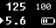
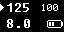
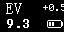
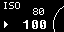
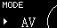
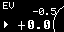
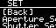
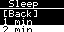
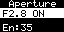
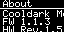

1. 设备概览
L102 是一套基于 HC32L021 的便携式测光表固件，当前版本支持：
- 光圈优先 `AV` / 快门优先 `TV` / EV 模式
- ISO 调整
- EV 曝光补偿
- 自动休眠与按键唤醒
- 单次测光 / 实时测光
如果你刚上手，建议先看“按键说明”和“快速测光流程”。
2. 按键说明
- 设置/返回键：主页中用于进入当前图标功能；列表或设置页中用于返回上一级。
- 测光键：主页中触发一次测光；列表或设置页中用于确认当前项目。
- 加 / 减键：用于切换项目或调整参数。
3. 主界面说明

AV 模式主页：上方显示快门，右上角显示 ISO，下方显示当前光圈，右下角显示电池。

TV 模式主页：上方为当前快门，下方为推荐光圈，左侧箭头指向当前优先参数。

EV 模式主页：上方显示 EV，右上角可交替显示ISO值/EV补偿值（如果不是0），下方显示当前 EV 读数。
4. 功能入口
主页图标入口：Home、ISO、MODE、EV、SET、About。
- Home：返回测光主页
- ISO：调整感光度
- MODE：切换 `AV / TV / EV`
- EV：设置曝光补偿
- SET：进入设置菜单
- About：查看版本、传感器和设备信息
5. 参数调整

ISO 调整：进入 ISO 页面后，用加减键切换数值。

模式调整：可在 `AV`、`TV`、`EV` 之间切换。

EV 调整：可做正负曝光补偿，例如 `-0.5`、`+0.5`、`+1.0`。
6. 设置菜单
当前固件设置菜单包含以下项目：
- Aperture Set：启用或禁用指定光圈档位
- Shutter Set：启用或禁用指定快门档位
- Live Meter：开启或关闭实时测光
- Dark Mode：深浅显示模式切换
- Sleep Time：设置自动休眠时间

设置菜单示意图 1。

设置菜单示意图 2。
休眠时间设置

可选 `1 min`、`2 min`、`4 min`。
光圈档位设置

`ON` 表示启用，`OFF` 表示关闭，`En:xx` 表示当前启用数量。
7. About 页面

可查看固件版本、硬件版本、传感器型号和当前照度信息。
8. 使用流程
快速测光
开机进入主页，设置里可以选择 `AV`（光圈优先）、`TV`（快门优先）或 `EV`（曝光值），设定 `ISO` 和 `EV` 补偿，然后按 `测光键` 获取结果。
开机进入主页，设置里可以选择 `AV`（光圈优先）、`TV`（快门优先）或 `EV`（曝光值），设定 `ISO` 和 `EV` 补偿，然后按 `测光键` 获取结果。
实时测光
进入 `SET`，打开 `Live Meter`，返回主页后设备会持续更新测光结果。
进入 `SET`，打开 `Live Meter`，返回主页后设备会持续更新测光结果。
调整常用档位
在 `Aperture Set` 或 `Shutter Set` 中关闭不常用档位，可减少切换时的无效选项。
在 `Aperture Set` 或 `Shutter Set` 中关闭不常用档位，可减少切换时的无效选项。
9. 休眠与唤醒
- 设备在达到设定空闲时间后会自动熄屏并进入深度休眠。
- 按键可以唤醒设备。
10. 常见问题
屏幕黑屏但机器似乎还在运行怎么办？
- 先尝试普通按键唤醒
- 若无恢复，长按设置/返回键约 8 秒重置界面并重新初始化屏幕
11. 使用建议
反射式测光
建议尽量按被摄体反射光环境进行测量。
建议尽量按被摄体反射光环境进行测量。
逆光场景
逆光建议靠近被摄物测光，避开逆光干扰，如果无法靠近被摄物应当加两档曝光。
逆光建议靠近被摄物测光，避开逆光干扰，如果无法靠近被摄物应当加两档曝光。
提升效率
如果常用镜头或快门范围固定，可在
如果常用镜头或快门范围固定，可在
Aperture Set / Shutter Set 中关闭不常用档位。